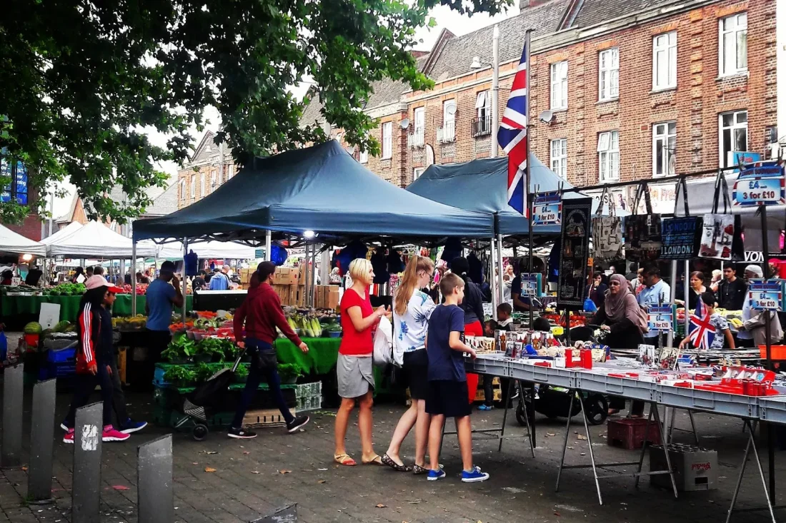
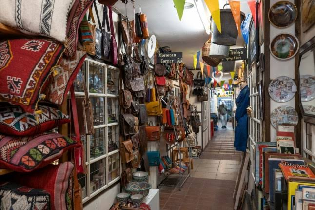
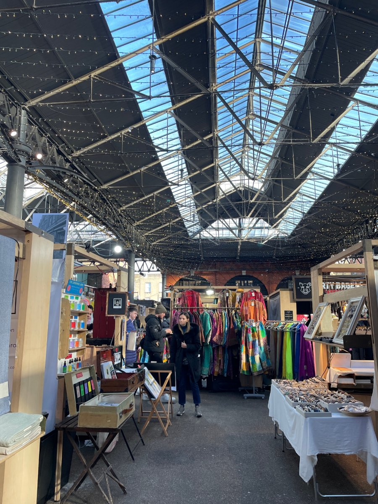

Thirty little shops. Hundreds of things you weren’t looking for.
An indoor market bent round one horseshoe corridor just off Wood Street. Around thirty small independent shops, side by side under one roof, and a different set of finds every time you walk it.
The shops
Around thirty independent units sit around one looping corridor. Every one is run by the person behind the counter, which is why no two visits turn up quite the same things, and why each shop keeps its own days and hours inside the market’s opening times.
A full list of who trades where is being put together. Until it is ready, the only honest way to know what is inside is to come and walk the loop.
Coming to browse
The market opens Tuesday to Saturday, 10.00 to 5.30. Individual shops vary, so ring 020 8521 0410 if you are making the trip for one in particular.
Already trading here
Keep one of the units and want your shop listed on this page? Send your name, unit number and a line about what you sell to hello@woodstreetindoormarket.co.uk.
One corridor. Thirty doors.
In one door, round the loop, out wherever you end up. This is an illustrated visitor guide, indicative and cheerfully not to scale. It is not an architectural or safety plan.
WOOD STREET
From picture palace to market hall
Before the stalls came the screen. The site had an earlier life as a local cinema, and the building still carries the shape of it: one long looping corridor where the audience used to be.
Since 1955 it has been a market. Thirty-odd small shops trading side by side while Wood Street changed around them. The faces turn over; the horseshoe holds.
Plan your visit
One corridor, thirty doors, no wrong turns.
Opening hours
Individual shops set their own days and hours. Ring ahead if you are making a special trip for one of them.
Getting here
Inside the market
The market trades on one level, around a single looping corridor. Some units are snug and browsing can be close quarters, but traders are quick to help reach or fetch things.
Most traders take cards, though a few of the smaller units are cash friendlier.
Well behaved dogs on leads are welcome in the corridor. Individual shops set their own rules.
For anything else, including access questions, ring 020 8521 0410 and we will talk your visit through.



Got a shop in you?
Units come up around the horseshoe from time to time. Small spaces, straightforward terms, and a ready made Saturday crowd. Get in touch and we will send you what is free, what it costs and when you can come and look.